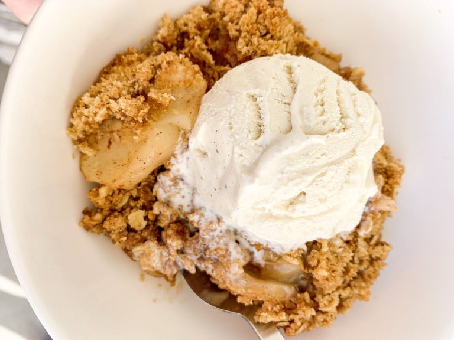

Apple Crisp Recipe

Description
Simple, old-fashioned apple crisp for all to enjoy!
If you want something simple and homemade on hand,
you can double the filling recipe and freeze half of it.
This recipe yields 8 servings.
Fillings
- 6 medium Granny Smith apples - peeled, cored, and sliced
- 1/2 cup white sugar
- 1 teaspoon ground cinnamon
- 1/4 teaspoon ground nutmeg
Toppings
- 1 cup brown sugar
- 1 cup all-purpose flour - can use rice flour
- 1 cup quick-cooking oats
- 1/2 cup unsalted butter, diced
- 1 teaspoon ground cinnamon
Steps
- Preheat the oven to 300 degrees F
- Grease a 9x13-inch baking dish
- Combine apples, sugar, cinnamon, and nutmeg for filling in a bowl
- Transfer filling to the prepared baking dish
- Combine brown sugar, rice flour, oats, butter, and cinnamon for topping in a large bowl
- Sprinkle on top of filling
- Bake in the preheated oven until golden and bubbly, about 1 hour